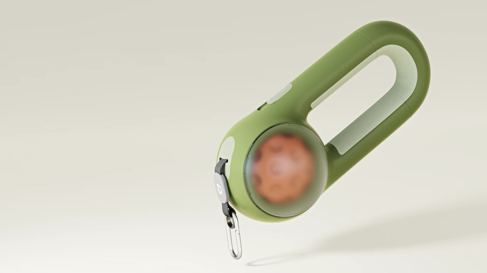
01
产品设计
Product Design
用户研究 → 产品定义 → 造型 → 结构 → 验证 → 交付
代表：DOGGIE · Lumora 光健康伴护仪
从完整产品设计，到真实商业与制造，再到 AI 与机器人的实机落地。

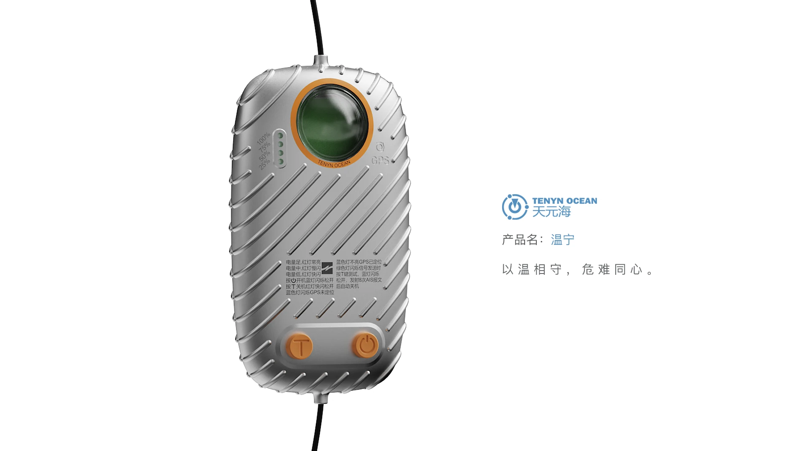
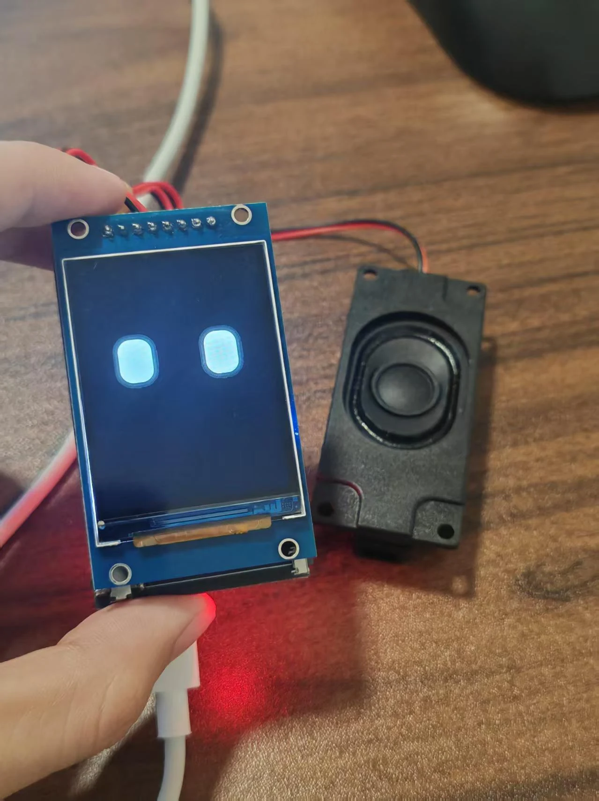
从场景研究、结构分件到实拍验证——三个项目分别证明完整设计能力、空间整合能力与商业落地能力。
宠物「出门—活动—回家」的连续过程里，牵引、玩具携带、垃圾袋收纳、入户前脚底清洁这些高频需求 分散在不同用品和步骤里——把同一次外出链路中的高频需求，整合进一个随身牵引产品。
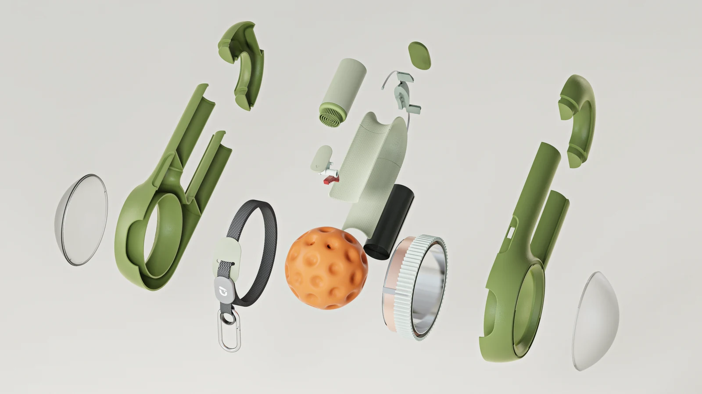
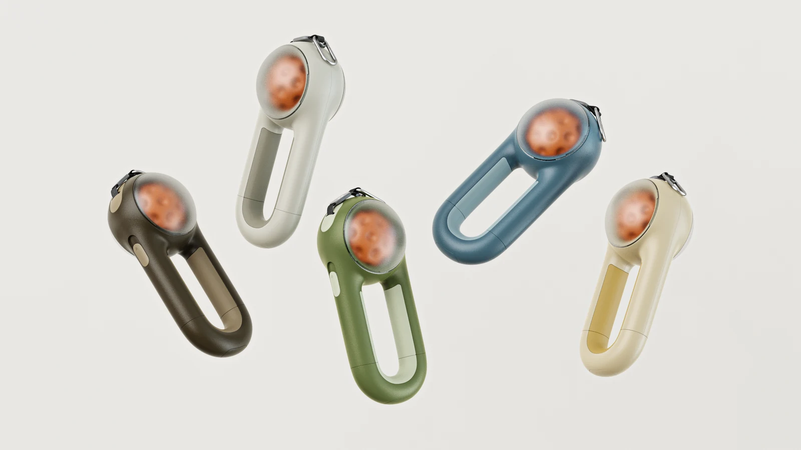
面向老年疗养照明场景，把照明、收纳、移动与空间效率组织进一套简洁的产品系统。
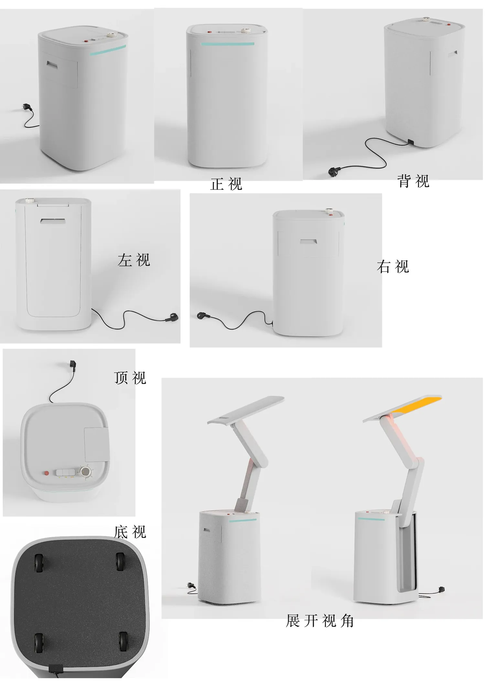
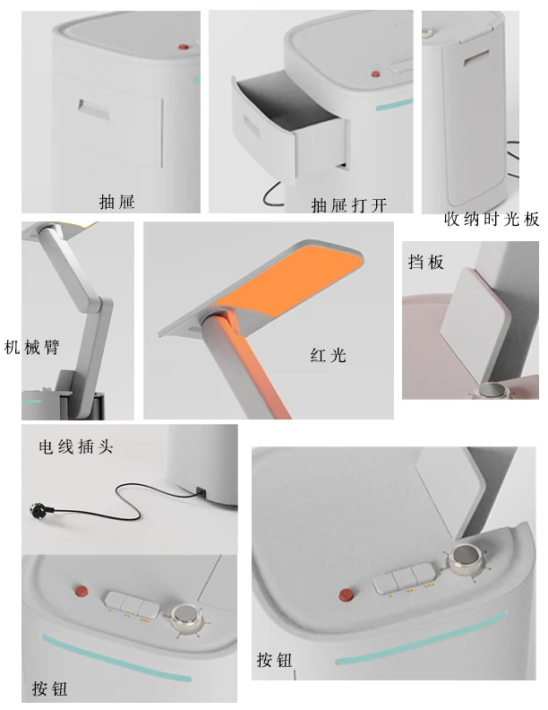
在真实商业需求下深度参与外观推进，经历多方向造型发散、客户反馈筛选与约 6 轮定向优化， 使方案逐步收敛至更符合客户需求的方向。
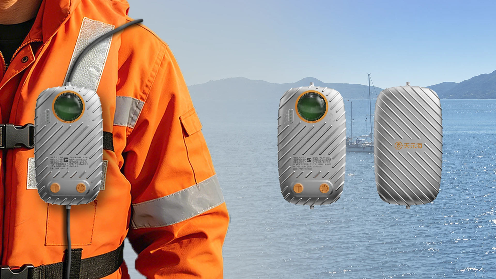
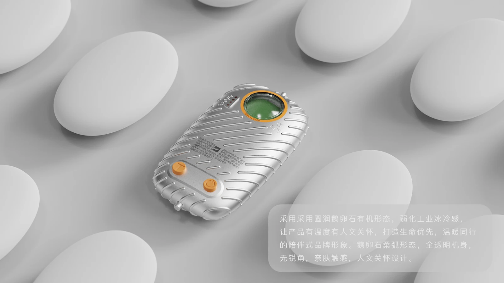
产品设计是基本盘。接下来两件，是把同样的能力推到 AI、机器人与软硬件系统里。
面向长期在桌面学习、工作与创作的青年用户，构建「可成长」的实体 AI 机器人系统， 把语音交互、私人后台、ESP32、状态反馈与有限外部设备能力组织成可运行的实机原型。
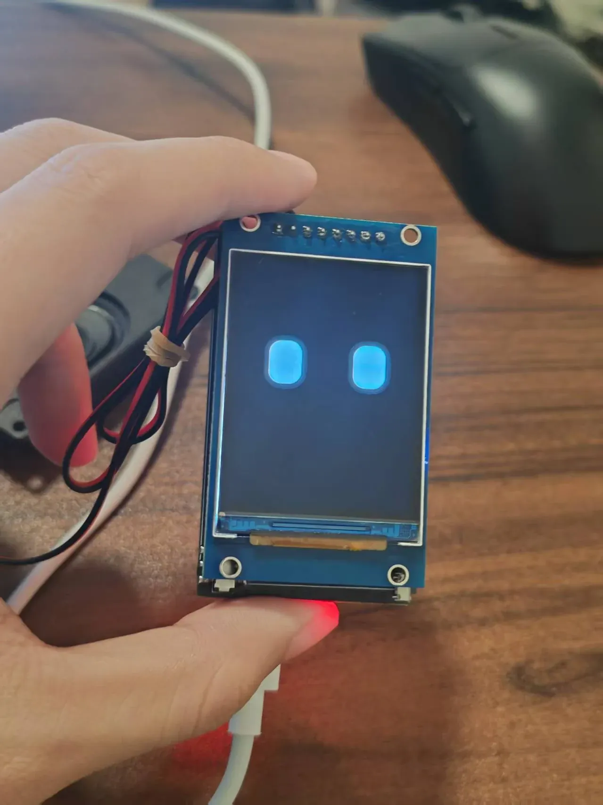
将当前产品的关键设计特征提取为可编辑 Product DNA，通过 Fixed / Controlled / Free 控制 AI 的探索范围。
打开界面走查 ↗ 可点：四步工作流逐屏走查
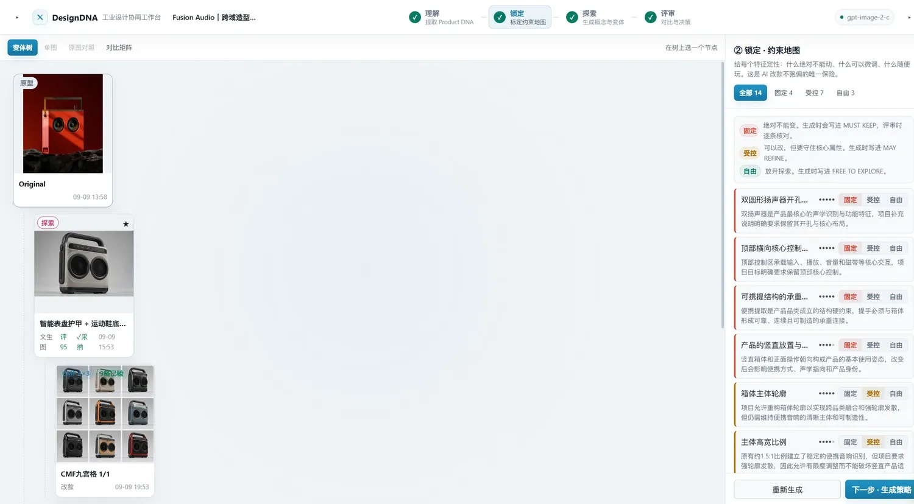
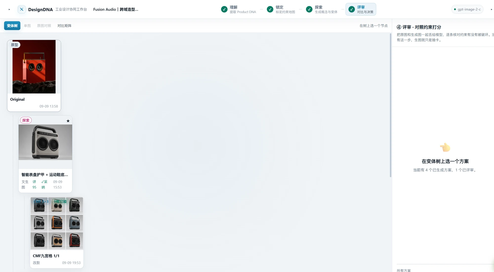
这些能力不是概念——它们进入过真实的产品团队、商业项目与制造现场。
参与 Walker C1 真实版本迭代、实机配置、产品验证与问题闭环。
约 3 个软件版本 · 约 12 项问题 · 2 项个人 Bug · 5+ 类控制 / 交互方式， 跟进修复、延后与后续验证。
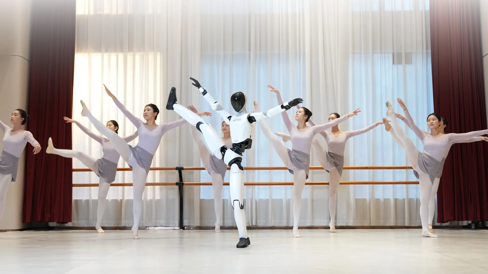
建图 · 地图关联 · 点位 · 路线 · 导览 · 领位 · 语音 / 动作事件 · 多终端操作 · Demo。
15+ 文档：SOP · 手册 · 版本说明 · 问题文档。
5G 只作为一张小成果卡：约 1 天完成 Linux 环境下 5G 模块联网适配并沉淀 SOP。
NEXT EXPERIENCE / 02 深圳壹点设计 10+ 商业设计任务 →
从设计想法进入模型、方案修改与视觉交付，在真实客户反馈中持续推进产品方案。
10+ 商业任务，主要涉及智能锁与落水报警终端，以及其他商业产品。
不只负责执行建模，而是在方案推进中加入比例、造型、细节、CMF 判断，并根据反馈持续修改。
NEXT EXPERIENCE / 03 鸿元金属 CNC 数控加工实习 →
进入真实制造现场，建立产品设计与实际加工之间的直接工艺认知。
CNC 高光 · 钻孔 · 铣削 / 攻丝 · 飞面 · 粗打磨 · 成品处理。
自动换刀 · 真空吸附 · 批量加工 · 材料加工表现。
通过制造现场实操，建立对材料、结构、加工空间、表面质量与生产效率之间关系的实际认知， 让后续产品设计不只停留在视觉层面。
从 CNC、商业产品，到机器人与 AI 原型，我更感兴趣的是一个想法如何被定义、被做出来， 并最终真正工作起来。
华南师范大学｜美术学院｜产品设计（本科）
2023.09–2027.06｜2027 届｜深圳 / 广州
产品设计｜产品定义、外观造型、Rhino 建模、概念结构、CMF、尺寸与部件关系、KeyShot / Photoshop
AI 与智能硬件｜模型 API、ASR–LLM–TTS、ESP32、本地唤醒、软硬件原型、Linux、AI 工作流
云尚教育｜ID 班助教｜2025 暑假 16 天
一人负责约 30 名学生的 Rhino 建模与 KeyShot 渲染答疑、作业修改与设计点评（主讲老师负责授课）。
华南师范大学「金种子」项目｜第一作者 / 项目负责人
广州传统民艺与装置艺术协同创新研究——以广绣为例
省级大学生创新创业训练计划｜项目成员
生命教育微课、公众号视觉 / 排版
JQ 轮滑协会｜会长
美术学院青年协会秘书部｜部长